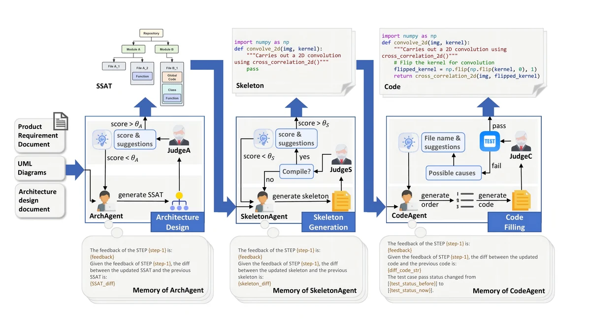
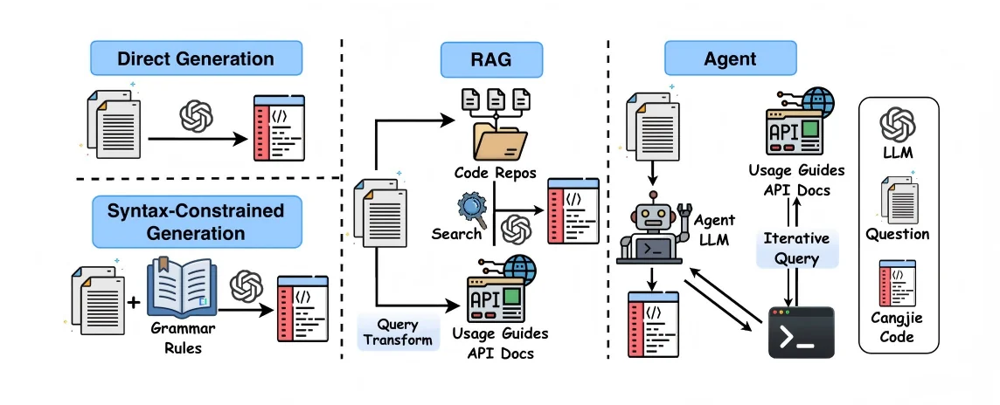
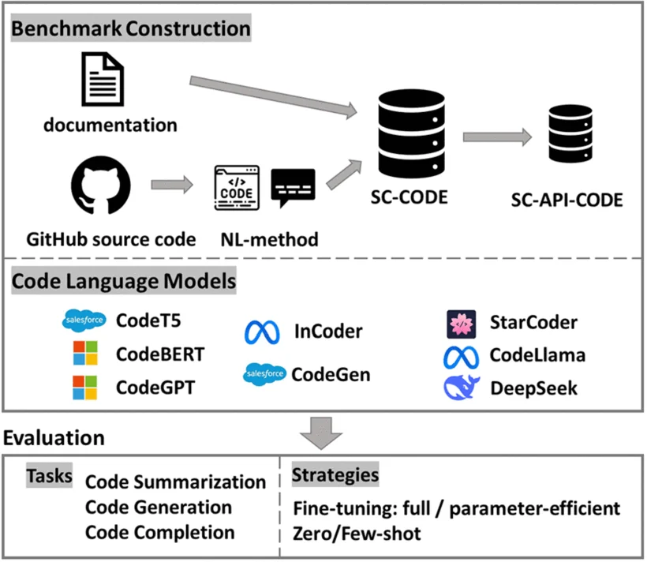
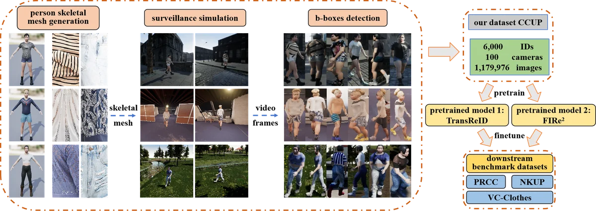
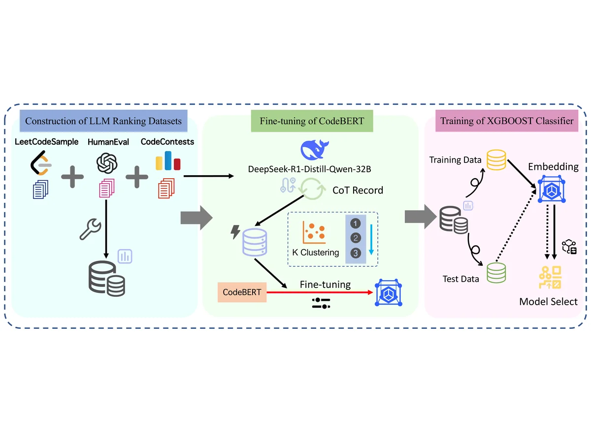

|
Chengru Wu I'm an undergraduate student at Beihang University (北京航空航天大学), majoring in Computer Science and Technology in the Computer Science honors program (计算机拔尖计划) at Shenyuan Honors College (沈元学院). I began my undergraduate studies in September 2023. My research interests include code language models, multi-agent systems for code generation, and embodied intelligence. Email / CV / GitHub / Google Scholar |

|
ResearchSelected papers and research projects are listed below. |
|
G0.5: One Autoregressive Stream for Robot Reasoning and Action
Galaxea Team (including Chengru Wu) Technical Report, May 2026; arXiv version, August 2026 project page / arXiv / code / pdf Introduces G0.5, a pretrained autoregressive Vision-Language-Action model with a unified transformer decoder that emits reasoning and action tokens in a single stream. Features a Cross-Embodiment Action Codec, Native Chain-of-Thought, and Visual Memory. Surpasses state-of-the-art models across seven benchmarks, including real-world robot fine-tuning (76.7% vs. 53.3% for π0.5), BEHAVIOR-1K (31.4% task score), DROID (82.5%), LIBERO (98.9%), and RoboTwin 2.0 (93.3%). My contribution: Contributed to G0.5 pretraining through training-data annotation, quality control, cleaning, and validation during my internship at Galaxea AI. |
|
|
 |
Towards Realistic Project-Level Code Generation via Multi-Agent Collaboration and Semantic Architecture Modeling
Qianhui Zhao, Li Zhang, Fang Liu, Junhang Cheng, Chengru Wu, Junchen Ai, Qiaoyuanhe Meng, Lichen Zhang, Xiaoli Lian, Shubin Song, Yuanping Guo ACM Transactions on Software Engineering and Methodology (TOSEM), 2026 ACM / arXiv / code Tackles project-level code generation by introducing CodeProjectEval (a dataset of 18 real-world repositories averaging 12.7 files and ~2,389 lines per task) and ProjectGen, a multi-agent framework that decomposes generation into architecture design, skeleton generation, and code filling. Introduces Semantic Software Architecture Tree (SSAT) to bridge user requirements and code. Achieves 57% improvement on DevBench and ~10x improvement on CodeProjectEval over baselines. |
|
 |
Can LLM Coding Assistants Support Emerging Programming Languages? An Empirical Study on Cangjie
Junhang Cheng, Fang Liu, Jia Li, Chengru Wu, Nanxiang Jiang, Li Zhang International Symposium on Empirical Software Engineering and Measurement (ESEM), 2026 arXiv / code / conference Introduces CangjieBench, a benchmark of 248 manually translated tasks from HumanEval and ClassEval. Evaluates six LLMs using direct prompting, syntax-constrained prompting, retrieval over documentation, retrieval over code, and agent-based workflows. A concise syntax reference offers the best accuracy-cost trade-off among prompt-based methods; the best agent configuration reaches the highest Pass@1 at 10–120 times the token cost of a single prompt. Code-to-Code translation can reduce compile rates by introducing Python-specific patterns. The arXiv preprint is titled CangjieBench: Benchmarking LLMs on a Low-Resource General-Purpose Programming Language. |
|
 |
On the Applicability of Code Language Models to Scientific Computing Programs
Qianhui Zhao, Fang Liu, Xiao Long, Chengru Wu, Li Zhang IEEE Transactions on Software Engineering (TSE), 2025 IEEE / code Evaluates whether pre-trained code language models (CodeBERT, CodeT5, Codex, StarCoder, CodeLlama) can generalize to scientific computing programming languages (SCPLs). Finds that while SCPLs are more challenging than general-purpose languages, CLMs are nevertheless applicable and knowledge from general languages transfers effectively to SCPL analysis. |
|
 |
CCUP: A Controllable Synthetic Data Generation Pipeline for Pretraining Cloth-Changing Person Re-Identification Models
Yujian Zhao, Chengru Wu, Yinong Xu, Xuanzheng Du, Ruiyu Li, Guanglin Niu IEEE International Conference on Multimedia and Expo (ICME), 2025 IEEE / arXiv / code Proposes a low-cost pipeline for generating controllable synthetic data for cloth-changing person re-identification. Introduces the CCUP dataset with 6,000 IDs, ~1.18M images, 100 cameras, and 26.5 outfits per individual. A pretrain-finetune framework using CCUP significantly improves CC-ReID models, outperforming state-of-the-art methods on PRCC, VC-Clothes, and NKUP benchmarks. |
|
 |
AdaptiveLLM: A Framework for Selecting Optimal Cost-Efficient LLM for Code-Generation Based on CoT Length
Junhang Cheng, Fang Liu, Chengru Wu, Li Zhang 16th International Conference on Internetware (Internetware), 2025 ACM / arXiv / code Introduces AdaptiveLLM, a framework that dynamically selects the optimal cost-efficient LLM for code generation based on automatically assessed task difficulty using Chain-of-Thought length. Clusters tasks into three difficulty levels and uses XGBoost for model selection. Achieves 7.86% improvement in pass@1 while reducing resource consumption by 88.9% compared to ComplexityNet. |


Research Experience |
|
Research Intern, Galaxea AI (星海图)
Research Intern, Prof. Li Zhang's Group, Beihang University |
Honors & Awards |
|
Miscellanea |
|
|
Template adapted from Jon Barron's website. |